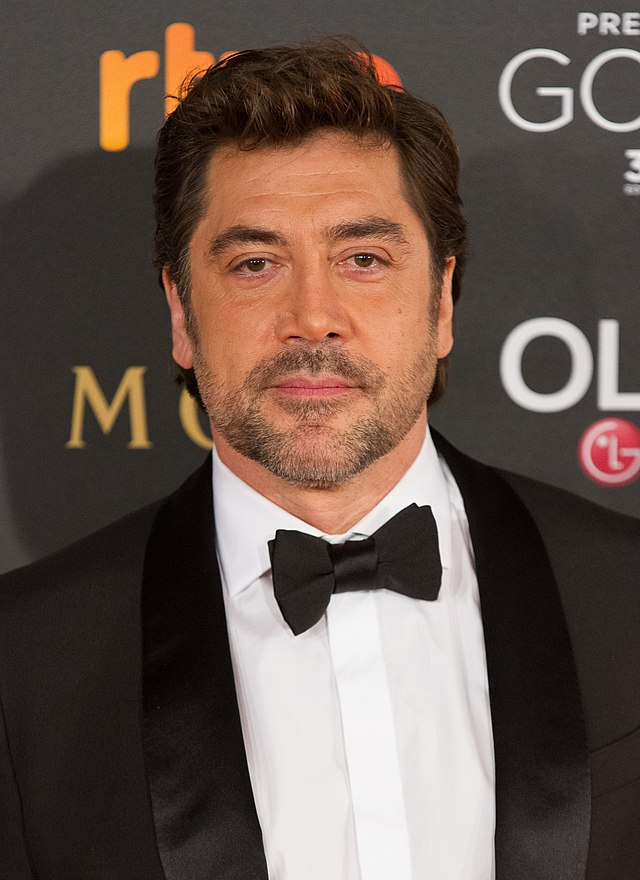

Rebecca Hall

Rebecca Hall was born in London, England, the daughter of Peter Hall, a stage director and founder of the Royal Shakespeare Company, and Maria Ewing, an opera singer. Her father was English. Her mother, who is American, is of Dutch and African-American origin. Her parents separated when she was still young, and they divorced in 1990. She has a half-brother, Edward Hall, who is a theatre director, and four other half-siblings, including theatre designer Lucy Hall, veteran TV drama producer Christopher Hall, and Jennifer Caron Hall, a writer and painter.
Scarlett Johansson

Scarlett Ingrid Johansson was born on November 22, 1984 in Manhattan, New York City, New York. Her mother, Melanie Sloan is from a Jewish family from the Bronx and her father, Karsten Johansson is a Danish-born architect from Copenhagen. She has a sister, Vanessa Johansson, who is also an actress, a brother, Adrian, a twin brother, Hunter Johansson, born three minutes after her, and a paternal half-brother, Christian. Her grandfather was writer Ejner Johansson. Johansson began acting during childhood, after her mother started taking her to auditions. She made her professional acting debut at the age of eight in the off-Broadway production of "Sophistry" with Ethan Hawke, at New York's Playwrights Horizons. She would audition for commercials but took rejection so hard her mother began limiting her to film tryouts. She made her film debut at the age of nine, as John Ritter's character's daughter in the fantasy comedy North (1994). Following minor roles in Just Cause (1995), as the daughter of Sean Connery and Kate Capshaw's character, and If Lucy Fell (1996), she played the role of Amanda in Manny & Lo (1996). Her performance in Manny & Lo garnered a nomination for the Independent Spirit Award for Best Lead Female, and positive reviews, one noting, "[the film] grows on you, largely because of the charm of ... Scarlett Johansson", while San Francisco Chronicle critic Mick LaSalle commentated on her "peaceful aura", and wrote, "If she can get through puberty with that aura undisturbed, she could become an important actress." After appearing in minor roles in Fall (1997) and Home Alone 3 (1997), Johansson garnered widely spread attention for her performance in The Horse Whisperer (1998), directed by Robert Redford, where she played Grace MacLean, a teenager traumatized by a riding accident. She received a nomination for the Chicago Film Critics Association Award for Most Promising Actress for the film. In 1999, she appeared in My Brother the Pig (1999) and in the music video for Mandy Moore's single, "Candy". Although the film was not a box office success, she received praise for her breakout role in Ghost World (2001), credited with "sensitivity and talent [that] belie her age". She was also featured in the Coen Brothers' dark drama The Man Who Wasn't There (2001), opposite Billy Bob Thornton and Frances McDormand. She appeared in the horror comedy Eight Legged Freaks (2002) with David Arquette and Kari Wuhrer. In 2003, she was nominated for two Golden Globe Awards, one for drama (Girl with a Pearl Earring (2003)) and one for comedy (Lost in Translation (2003)), her breakout role, starring opposite Bill Murray, and receiving rave reviews and a Best Actress Award at the Venice Film Festival. Her film roles include the critically acclaimed Weitz brothers' film In Good Company (2004), as well as starring opposite John Travolta in A Love Song for Bobby Long (2004), which garnered her a third Golden Globe Award nomination. She dropped out of Mission: Impossible III (2006) due to scheduling conflicts. Her next film role was in The Island (2005) alongside Ewan McGregor which earned weak reviews from U.S. critics. After this, she appeared in Woody Allen's Match Point (2005) and was nominated again for a Golden Globe Award. In May 2008, she released her album "Anywhere I Lay My Head", a collection of Tom Waits covers featuring one original song. Also that year, she starred in Frank Miller's The Spirit (2008), the Woody Allen film Vicky Cristina Barcelona (2008), and played Mary Boleyn opposite Natalie Portman in The Other Boleyn Girl (2008). Since then, she has appeared as part of an ensemble cast in the romantic comedy He's Just Not That Into You (2009), the action superhero film Iron Man 2 (2010), the comedy-drama We Bought a Zoo (2011) and starred as the original scream queen, Janet Leigh, in Hitchcock (2012). She then played her character, Black Widow, in the blockbuster action films The Avengers (2012), Captain America: The Winter Soldier (2014), Avengers: Age of Ultron (2015), Captain America: Civil War (2016), Avengers: Infinity War (2018), Avengers: Endgame (2019) and Black Widow (2021), and also headlined the sci-fi action thriller Lucy (2014), a box office success. With more than a decade of work already under her belt, Scarlett has proven to be one of Hollywood's most talented young actresses. Her other starring roles are in the sci-fi action thriller Ghost in the Shell (2017) and the dark comedy Rough Night (2017). Scarlett and Canadian actor Ryan Reynolds were engaged in May 2008 and married in September of that year. In 2010, the couple announced their separation, and subsequently divorced a year later. In 2013, she became engaged to French journalist Romain Dauriac, the couple married a year later. In January 2017, the couple announced their separation, and subsequently divorced in March of that year. They have a daughter, Rose Dorothy Dauriac (born 2014)
Javier Bardem

Javier Bardem belongs to a family of actors that have been working on films since the early days of Spanish cinema. He was born in Las Palmas de Gran Canaria, Spain, to actress Pilar Bardem (María del Pilar Bardem Muñoz) and businessman José Carlos Encinas Doussinague. His maternal grandparents were actors Rafael Bardem and Matilde Muñoz Sampedro, and his uncle is screenwriter Juan Antonio Bardem. He got his start in the family business, at age six, when he appeared in his first feature, "El picaro" (1974) (A.K.A. The Scoundrel). During his teenage years, he acted in several TV series, played rugby for the Spanish National Team, and toured the country with an independent theatrical group. Javier's early film role as a sexy stud in the black comedy, Jamón, Jamón (1992) (aka Ham Ham) propelled him to instant popularity and threatened to typecast him as nothing more than a brawny sex symbol. Determined to avert a beefcake image, he refused similar subsequent roles and has gone on to win acclaim for his ability to appear almost unrecognizable from film to film. With over 25 movies and numerous awards under his belt, it is Javier's stirring, passionate performance as the persecuted Cuban writer, Reynaldo Arenas, in Before Night Falls (2000) that will long be remembered as his breakthrough role. He received five Best Actor awards and a Best Actor Oscar nomination for his portrayal.